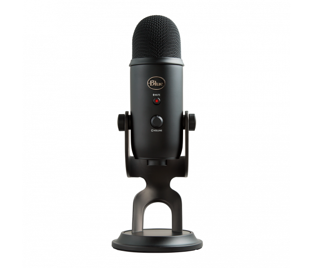

Microfone condensador
Microfones condensadores são ótimos para captação de voz, o que tornam eles favoritos para realizar streams com alta qualidade.
Microfones condensadores são ótimos para captação de voz, o que tornam eles favoritos para realizar streams com alta qualidade.
Multiplos monitores são ideais para a administração de eventos, pois enquanto em um monitos está aberto o conteúdo sendo transmitido, no outro terão as informações do serviço de streaming, chat e outros programas pertinentes que não precisam ser exibidos ao longo da livestream